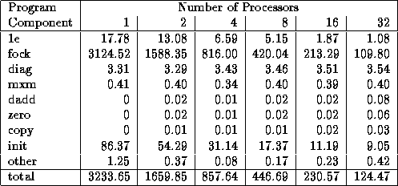
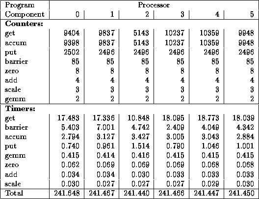
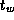
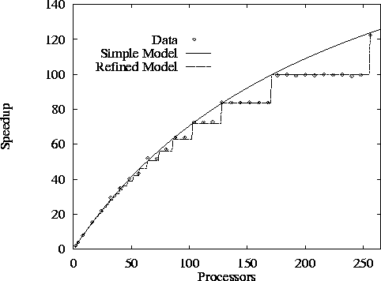
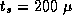
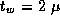
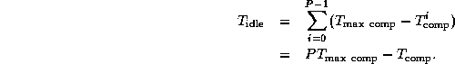

![[DBPP]](pictures//asm_color_tiny.gif)


![[Search]](pictures//search_motif.gif)
Performance models also play an important role after a design is complete, when we start to write programs. Comparisons of observed and predicted execution times can provide valuable information about both an algorithm and its implementation.
Even if considerable care is taken when designing and carrying out experiments, the idealized nature of our models means that observed and predicted execution times will seldom completely agree. Major discrepancies signify either that the model is incorrect or that the implementation is inadequate. In the first case, we can use the empirical results to determine where the model is deficient; this information in turn enables us to reassess the quantitative tradeoffs that we have used to justify design decisions. In the second case, we can use the model to identify areas in which the implementation can be improved.
When faced with a substantial difference between modeled and observed execution times, our first step should be to check both the performance model and our experimental design to verify not only that the model and experiments are correct but that they are measuring the same thing.
Our next step should be to obtain an execution profile of the parallel code. (In contrast to the execution profiles discussed in Section 3.4.3, this profile will be based on measured values.) The goal here is to obtain a more detailed view of program behavior, by measuring, for example, time spent in initialization, time spent in different phases of a computation, total idle time, and the total number and volume of messages communicated. Ideally, data will be obtained for a range of problem sizes and processor counts. Tables 3.4 and 3.5 show typical examples of execution profile data, in this case from a parallel computational chemistry code that incorporates the Fock matrix construction algorithm of Section 2.8 as a kernel. These data were obtained by using instrumentation inserted manually into the program.

Table 3.4: A simple execution profile for a single step of
a parallel computational chemistry code, here applied to a relatively
small problem on an IBM SP computer. This code combines the Fock
matrix construction algorithm of Chapter 2 (``fock'') with additional
components. The profile shows both the time spent in different parts of
the program for varying processor counts and the total execution time.
Scalability is reasonably good, although it is evident that the
routine diag has not been parallelized. The init routine
does not scale well, but this cost is less important because the code is
normally run for many steps.

Table 3.5: A more detailed execution profile for the parallel
code of Table 3.4. This gives call frequencies and execution times
for various communication routines on each processor. For brevity,
only the first 6 of 16 processors are shown. Instrumentation overhead
increases total time from the 230 seconds of Table 3.4 to around 241
seconds. The get, accum, and put routines read and
write data in distributed global arrays. A get operation, which
blocks waiting for a response to a remote request, takes around 1.7
milliseconds on average. Since each data transfer is relatively
small, and the IBM SP's  is low, this time must include
substantial idle time that could perhaps be overlapped with local
computation. The second major source of communication cost is the
barrier operation, which is used to ensure that all updates to a
global array have completed before reading begins. We may wish to
examine the program to determine whether we really need 85 such
operations per step.
Once we have obtained an execution profile, we can compare it with the performance model to identify deficiencies in either the model or the implementation. In the following sections, we list several potential problems that may be revealed in an execution profile.
We first consider issues that may lead to observed execution times greater than predicted by a model. Most often, such a situation occurs because the performance model is incomplete: some aspect of an algorithm or its implementation was neglected as insignificant but proves in practice to contribute significantly to execution time.
An implementation may execute faster than predicted by a performance model. If this effect becomes more marked as the number of processors increases, this phenomenon is termed a speedup anomaly---the observed speedup is greater than predicted. Sometimes, we may see a speedup that is greater than linear, or superlinear. Situations in which this can occur include the following:
 from this cache effect
offsets increases in
from this cache effect
offsets increases in  and
and  resulting from
the use of additional processors, then efficiency will be greater than
1 and speedup will be superlinear. Similarly, the increased physical
memory available in a multiprocessor may reduce the cost of memory
accesses by avoiding the need for virtual memory paging.
resulting from
the use of additional processors, then efficiency will be greater than
1 and speedup will be superlinear. Similarly, the increased physical
memory available in a multiprocessor may reduce the cost of memory
accesses by avoiding the need for virtual memory paging.

Figure 3.10: Speedup of an implementation of the 1-D finite difference
algorithm with N=512
and Z=10
as measured on the Intel
DELTA and as predicted by both a simple performance model that does
not account for load imbalances and a more sophisticated model that
does; both models assume sec and
sec.
 .
. Evaluating a Finite Difference Program:
Evaluating a Finite Difference Program:
We consider the behavior of an implementation of the 1-D finite
difference algorithm. Figure 3.10 shows
observed performance, performance predicted by Equation 3.4,
and performance predicted by a refined model that we shall develop in
the following. We present speedups rather than raw execution times in
order to make results clearer for larger P
. The predicted
performance curves use machine parameter values obtained by a fitting
process so as to take into account additional overheads not accounted
for by the ``best possible'' parameter values of Table 3.1.
A comparison of the two sets of parameter values (sec
versus 77 sec, sec versus 0.54  sec) indicates
that the finite difference implementation incurs significant overhead.
This suggests that there may be opportunities for optimization.
sec) indicates
that the finite difference implementation incurs significant overhead.
This suggests that there may be opportunities for optimization.
Figure 3.10 shows that Equation 3.4 is
inaccurate for N=512
and larger values of P
. The observed
speedup does not increase continuously, as predicted, but in a
stepwise fashion. This observation suggests that the model is
incorrect in assuming that some aspect of program performance varies
continuously with P
. Examining Equation 3.4, we see
that only computation cost depends on P
; both the number of
messages and message size per processor are constant and hence
independent of P
. The problem then becomes clear.
Equation 3.4 assumes that each processor has
N/P
columns of the grid. In reality, P
does not always divide
N
. More specifically, some tasks will be allocated  grid points and others points.
For example, if N=8
, Z=1
, and P=3
, some will have
and others grid points. Hence, while total
computation costs are as given by Equation 3.4, the maximum
computation costs on any processor are as follows:
grid points and others points.
For example, if N=8
, Z=1
, and P=3
, some will have
and others grid points. Hence, while total
computation costs are as given by Equation 3.4, the maximum
computation costs on any processor are as follows:
This uneven distribution of computation leads to idle time, since at each step processors with less computation will terminate before those with more. Total idle time is the difference between the maximum computation time and the mean computation times, multipled by the number of processors:

Incorporating this idle time into Equation 3.4, we obtain the following more general performance model:
The second predicted performance curve in Figure 3.10 is obtained using this refined model. Notice that the two models are equivalent when N is an integer multiple of P .
© Copyright 1995 by Ian Foster